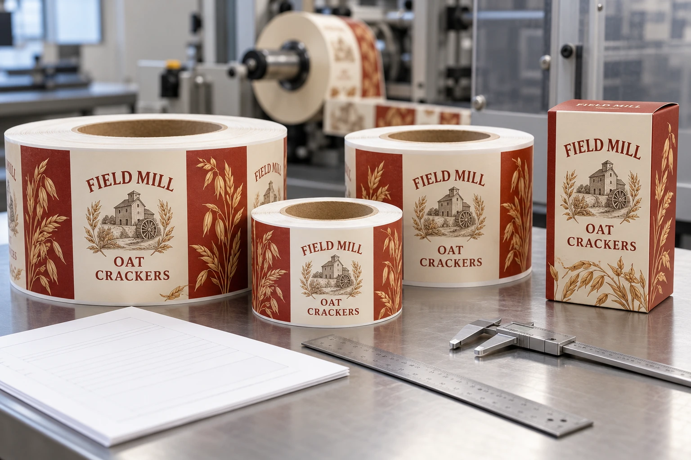

The equipment owner specifies a core and a maximum roll diameter. The converter quotes a target quantity per roll. Purchasing still needs to check whether the packing plan represents a roll that the actual line can accept.
Keep machine limits, supplier targets and received quantities in separate columns. They answer different questions. A desired number of labels per roll must not quietly override a hard equipment limit, and an outside diameter does not by itself verify a count.

AI-generated packaging example. The brand artwork is fictional and the scene is illustrative, not a customer project or measured test.
Use a three-column roll acceptance sheet
Attach the relevant equipment reference and identify the installed unwind arrangement. The following is an editorial reconciliation tool, not permission to alter a machine or exceed its rated limits.
| Item | Equipment requirement | Supplier proposal and received-roll record |
|---|---|---|
| Core bore | Confirm ID, units and accepted configuration | Identify the proposed core and measured/verified fit evidence |
| Finished envelope | Maximum permitted diameter and relevant clearance | Confirm the maximum finished roll, not only a nominal target |
| Web path | Accepted liner width and relevant guiding/sensing needs | Record the supplied web construction and any exception |
| Loading | Equipment and workplace requirements for handling the roll | Identify the proposed roll mass and loading arrangement where relevant |
| Winding | Agreed leading edge, printed side and format | Tie the drawing and first-off sample to the actual order |
| Inventory | Required quantity per SKU | Reconcile total labels, roll count and target quantity per roll separately |
Ask the converter which quantity or roll dimension is a target and which is a confirmed limit. If the target quantity does not fit the allowed envelope for the selected construction, have the parties revise the roll plan. Do not ask an operator to discover the mismatch during the launch run.
Zebra's ZD200 user guide provides one example of a manufacturer publishing media core, outside-diameter and other requirements together. It is a printer-specific reference, not a general specification for beverage applicators. Your own equipment reference and installed options remain the relevant starting point.
Reconcile inventory without inventing a shortage
Write down how the supplier identifies quantities and tolerances. A carton with a stated roll count is not necessarily a promise that every roll contains exactly the same number of labels. Conversely, saying that roll quantities vary does not answer whether the confirmed total order was supplied.
Keep the original packing record and identify the affected SKU and roll when a discrepancy is suspected. Compare the agreed quantity basis, the delivery record and any reliable count evidence before making a conclusion. Do not derive a precise label count from a photograph of the outside diameter.
If a roll is damaged, telescoped or otherwise unsuitable for the line, record that condition separately from its dimensional specification. A receiving record should show what was observed and what remains to be checked; it should not assign an unexplained failure to core size alone.
Close the interface before the production shipment
Where a trial roll is needed, have the equipment owner define and supervise the relevant check under the equipment's instructions. Identify the sample construction and format so that its result is not applied to a different production roll. No machinery trial has been performed for this guide.
Use the roll-direction guide for the separate orientation drawing and the roll versus sheet comparison when the production format itself is unsettled. Keep the chosen format and the dimensional record linked in the order.
Short answer
Send the converter five roll facts: core inside diameter, maximum outside diameter, unwind direction, leading edge and target labels per roll. Add the machine model and roll-weight limit whenever possible. “Standard roll” is not a specification.
A label order can look correct while its core does not fit the intended equipment. Treat that interface as a purchasing requirement.
Core ID and roll OD solve different problems
| Specification | Controls | If wrong |
|---|---|---|
| Core inside diameter | Fit on the unwind mandrel | Roll cannot mount or slips |
| Maximum outside diameter | Clearance, weight and run length | Roll hits guards or overloads the unwind |
| Web width | Guide and sensor path | Tracking becomes unstable |
| Unwind direction | Which side and edge present first | Copy is upside down or adhesive faces the wrong way |
| Labels per roll | Changeover frequency and inventory count | Unexpected stops or excess roll weight |
A composite co-packer rejection
This is a composite planning example. A sauce brand moves filling to a co-packer. The label dimensions and bottle stay unchanged, so purchasing reorders the previous rolls. The old hand station used a small core; the new automatic applicator requires a larger mandrel and limits finished roll diameter.
The brand says, reasonably, “It is the same label.” The co-packer says, also reasonably, “It is the wrong roll.” Both are correct. The printed unit is the same; the production component is not.
A practical response is to issue a new roll specification linked to the co-packer and line number, even when the visible artwork remains unchanged.
Why labels per roll is an estimate
The number depends on label pitch, liner caliper, face material, adhesive, core size and maximum OD. Two rolls with the same outside diameter can carry different quantities. Splices and winding tension add variation. Ask for a target quantity with a practical tolerance, then let the maximum OD be the hard machine limit.
For production planning, divide the run by the verified labels-per-roll figure and add expected setup waste. For purchasing, count finished rolls and total labels separately so a small winding variation does not look like a shortage.
Large rolls are efficient until they are not
A larger OD can reduce changeovers, but it adds weight and inertia. Operators may struggle to lift it safely, and a compact tabletop applicator may not control it well. A smaller roll can be the better choice for short seasonal SKUs, manual loading or frequent artwork changes.
Measure the line, not the sample roll alone
- Read the applicator manual and photograph the unwind station.
- Measure the mandrel and available guard clearance.
- Record maximum roll weight and whether the roll is power-unwound.
- Confirm label-out or label-in winding.
- Draw the leading edge and copy orientation on the approval.
- Include gaps, sensor marks and any clear-label sensing requirement.
- Test one production roll before releasing the full order.
What to put on the purchase order
- Core ID with units and allowed tolerance.
- Maximum finished roll OD, not a preferred average.
- Unwind diagram and leading-edge orientation.
- Target labels per roll and overrun/underrun tolerance.
- Machine model, web direction and application speed.
- Maximum roll weight and pallet orientation.
- SKU and artwork revision on every carton.
Avery's WePrint core information describes that supplier's fixed roll offering. It does not establish a universal core or outside-diameter requirement. Use your own equipment reference, and the Label Roll Direction Guide for the separate orientation drawing.
Send a roll-format specification inquiry with the equipment reference, confirmed core and roll limits, label size, construction preference and quantities by SKU. Attach the unwind drawing and identify unresolved fields through the listed email or WhatsApp route; the contact form opens an email draft. Ask for a roll plan that can be reviewed against those requirements before printing begins.